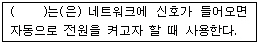
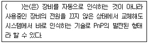
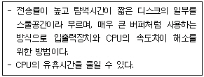
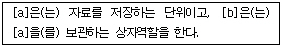
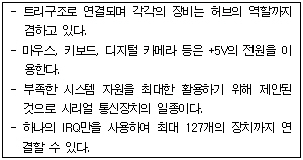

PC정비사-2급 (2004-02-15 기출문제)
1과목: PC유지보수
1. 다음 오류 메시지의 일반적인 원인은?
- 포맷되어 있지 않은 드라이브의 접근
- 파티션이 되어 있지 않은 드라이브의 접근
- 부팅 할 수 없는 드라이브의 접근
- 실행영역이 지정되어 있지 않은 드라이브의 접근
(정답률: 52%)

2. 컴퓨터가 동작하기 위한 필수 부품이 아닌 것은?
- CPU
- 메인보드
- 파워 서플라이
- 마우스
(정답률: 92%)
3. 부트섹터에 어떠한 정보도 기록하지 못하도록 하려고 할 때 사용하는 CMOS Setup의 메뉴는?
- Video ROM BIOS Shadow
- UART2 Use Infrared
- Boot Sequence
- Anti Virus Protection
(정답률: 45%)
4. 부팅이 정상적으로 되지 않는 원인으로 볼 수 없는 것은?
- 하드 디스크에 전원 케이블이 연결되지 않았다.
- 하드 디스크 케이블이 반대로 연결 되었다.
- CPU가 제대로 소켓에 꽂혀 있지 않다.
- 비디오 카드의 메모리에 문제가 있다.
(정답률: 26%)
5. 케이스의 각종 케이블과 메인보드를 연결할 때, 다음 설명 중 잘못된 것은?
- 전원 스위치, 리셋 스위치는 커넥터에 반대로 연결하면 동작하지 않는다.
- LED와 스피커는 반대로 꽂으면 동작이 안된다.
- 전원케이블에는 여러 종류의 전압이 출력된다.
- 스피커 케이블을 반드시 연결할 필요는 없다.
(정답률: 56%)
6. PC를 사용하는 도중에 디렉토리의 이름이 깨지고 없던 파일들이 늘어난 것 같다. 이를 해결하는 유틸리티는?
- 디스크 정리
- 시스템 파일 검사기
- 디스크 검사
- 디스크 조각 모음
(정답률: 44%)
7. PC에 다음과 같은 이상이 발생하였다. 이에 대한 원인으로 가장 올바른 것은?
- 하드디스크의 공간 부족
- 램 용량 부족
- 그래픽카드 드라이버 오류
- 아이콘 정보가 기록된 ShellIconCache파일 오류
(정답률: 78%)
8. 다음은 Award BIOS의 Power Management Setup의 특정 메뉴에 대한 설명이다. 빈 칸에 들어갈 메뉴는?

- PWR Up On Modem Act
- Restore AC/PWR Loss
- Automatic Power Up
- Wake On LAN
(정답률: 59%)
9. PnP 장치가 관리하지 않는 것은?
- DMA 채널
- TCP 포트
- IRQ
- 입출력 Address
(정답률: 57%)
10. 다음 괄호 속에 들어갈 올바른 용어는?

- Hot Swap
- SCSI
- PCI
- ACI
(정답률: 63%)
11. Windows 98에서 어떤 응용프로그램이 특정한 DLL 파일을 찾을 수 없다며 실행되지 않는다면, 다음 중 문제 해결을 위한 방법으로 적절하지 못한 것은?
- 해당 응용프로그램을 다시 설치해본다.
- 동일한 프로그램이 설치된 다른 PC에서 문제가 되는 DLL 파일을 찾아 해당 폴더에 복사해 넣는다.
- 하드디스크의 이상으로 파일이 손실된 경우에 대비해 '디스크 검사' 등으로 하드디스크 점검을 해본다.
- Windows 98의 가상 메모리 크기를 늘려준다.
(정답률: 67%)
12. Windows 98을 설치하는 도중 시스템이 멈추고 응답이 없는 경우가 생길 수 있는데, 추정할 수 있는 문제점이 아닌 것은?
- 바이러스가 있는 파일이 디스크에 저장되어 있을 경우
- 바이러스에 감염이 된 경우
- 메모리 상에 바이러스 예방 프로그램이 상주 되어 있는 경우
- CMOS BIOS내에 바이러스를 예방하는 기능이 켜져 있는 경우
(정답률: 33%)
13. 메인보드의 CMOS Setup에서 인식을 시켜야만 정상적으로 작동하게 되는 것은?
- CD-ROM
- RAM
- FDD
- CPU
(정답률: 45%)
14. 제어판을 확인해 보니 사운드 카드 드라이버가 스카시 장치와 충돌하고 있다는 것을 발견하였다. 이를 해결하기 위한 적절한 방법은?
- 사운드 카드나 스카시 장치의 리소스를 변경한다.
- 사운드 카드 드라이버를 제거한다.
- 기존의 스카시 드라이버를 재설치 한다.
- 기존의 스카시 드라이버를 새로 업그레이드 한다.
(정답률: 69%)
15. 다음 중 컴퓨터시스템 내부에서 가장 먼저 자체 검사를 하는 것은?
- HDD
- CD-ROM
- RAM
- FDD
(정답률: 61%)
2과목: PC운영체제
16. 프로세스 스케쥴링의 종류가 아닌 것은?
- Round Robin 스케쥴링
- FIFO(First In First Out) 스케쥴링
- Semaphore 스케쥴링
- Shortest Job First 스케쥴링
(정답률: 43%)
17. 도스키(doskey)는 명령어를 보다 빠르게 편집하는데 주로 사용된다. 명령 프롬프트에서 도스키 명령을 실행하여 History 기능을 활성화 한 후 이전에 사용한 명령어들을 리스트 형태로 화면에 나타내기 위한 키는?
- F7
- F8
- F3
- F4
(정답률: 35%)
18. Windows 98의 한글 입출력 기능이 정상적으로 동작하지 않는 경우가 있다. 이와 관련하여 손상된 한글 입출력 파일이 아닌 것은?
- riched.dll
- riched16.dll
- riched20.dll
- riched32.dll
(정답률: 34%)
19. Windows 98 작업 도중 잠시 DOS 상태로 빠져 나갔다가 다시 복귀할 때 프롬프트 상태에서 입력해야 하는 명령어는?
- Quit
- End
- Set Out
- Exit
(정답률: 54%)
20. Windows 98의 시스템 파일 중, 컴퓨터 운영에 필요한 여러 하드웨어와 외부 환경 프로그램에 대한 정보를 수록해 놓은 파일은?
- system.ini
- win.ini
- autoexec.bat
- config.sys
(정답률: 37%)
21. Windows XP에서 시스템 시작시 자동으로 실행되는 프로그램들을 확인 및 시작하지 않도록 설정할 수 있는 프로그램을 실행하는 명령어는?
- regedit32
- netstart
- system
- msconfig
(정답률: 61%)
22. 정지 영상의 Digital 압축 및 복원에 관한 국제 표준은?
- IPEG
- JPEG
- KPEG
- MPEG
(정답률: 59%)
23. Windows 98 운영체제에 포함되어 있지 않은 프로그램은?
- 하이퍼 터미널
- 윈집
- 시스템 구성 유틸리티
- 인터넷 익스플로러
(정답률: 55%)
24. Windows XP는 Windows 98에 비해 많은 변화가 있다. 다음 중 Windows 98에도 포함되어 있던 특징은?
- 파일 단위 보안
- NT 커널의 이용
- 듀얼 CPU 지원
- IE 포함
(정답률: 48%)
25. 현재 사용하고 있는 컴퓨터의 가상 메모리를 변경하고 싶다. 이 때 사용할 수 있는 Windows 제어판의 항목은?
- 새 하드웨어 추가
- 바탕화면
- 시스템
- 프로그램 추가/삭제
(정답률: 68%)
26. Windows XP에서 바탕화면에 현재 보고있는 웹페이지를 표시하고 싶을 때 가장 바람직한 방법은?
- [시작] 대화상자에서 [찾기] 대화상자를 선택하고 원하는 웹페이지를 입력한다.
- [디스플레이 등록정보] 대화상자의 [바탕화면]탭에서 <바탕화면 사용자지정>단추를 선택, [바탕화면 항목] 대화상자의 [일반]탭에서 <바탕화면 정리 시작>단추를 클릭한다.
- [시작]-고정시키고자 하는 프로그램 아이콘에 마우스 오른쪽 단추를 누르고, 단축메뉴중에 [시작메뉴에 고정]을 선택한다.
- [디스플레이 등록정보] 대화상자의 [바탕화면]탭에서 <바탕화면 사용자지정>단추를 선택하고, [바탕화면 항목] 대화상자의 [웹]탭에서 <새로만들기>단추를 선택한 다음 [새 바탕화면 항목] 대화상자에서 웹페이지 주소를 입력하고 <확인>단추를 누른다.
(정답률: 66%)
27. 다음에서 설명한 내용은?

- DMA(Direct Memory Access)
- Buffering
- Spooling
- Waiting
(정답률: 59%)
28. 다음 [a]와 [b]에 적당한 용어는?

- a-파일, b-폴더
- a-파일, b-프로그램
- a-폴더, b-파일
- a-폴더, b-프로그램
(정답률: 77%)
29. Windows에서 파일 검색을 위한 탐색기 사용에 관한 다음 설명 중 잘못된 것은?
- 탐색기에서 모든 하위 폴더들을 개방시키기 위해서는 폴더를 선택한 후 숫자 패드의 ‘*’버튼을 누르면 된다.
- 개방된 모든 하위 폴더들을 닫기 위해서는 최상위 폴더를 선택한 후 숫자 패드의 ‘-’버튼을 누르면 된다.
- 내 컴퓨터의 어느 위치에서나 탐색기를 수행시키기 위해서는 탐색기를 수행시킬 디스크나 폴더를 선택한 후 Shift키를 누른 상태에서 해당 디스크나 폴더를 빠르게 두 번 클릭하면 된다.
- 탐색기로 네트워크 환경을 탐색할 경우에도 지역 디스크를 탐색하는 것과 동일한 방법으로 탐색을 수행할 수 없다.
(정답률: 46%)
30. 부팅디스크를 만들 때 "sys a:" 라는 명령에 의해 전송되지 않는 파일은?
- IO.SYS
- COMMAND.COM
- MSDOS.SYS
- SYS.COM
(정답률: 40%)
3과목: PC주변기기
31. 2개 이상의 영상을 한 화면에서 합성해서 모니터에 표시해주는 장치는?
- 비디오 카드
- 비디오 오버레이 카드
- 프레임 그래버 보드
- 사운드 카드
(정답률: 65%)
32. 모니터의 주파수에 대한 설명이다. 잘못된 것은?
- 모니터의 주파수는 화면을 그려주는 회수와 동일하다.
- 주파수는 낮을수록 좋다.
- 수직주파수가 곧 재생률이다.
- 수직주파수를 높이려면 수평주파수가 높아야 한다.
(정답률: 71%)
33. 기존 CICS 방식의 컴퓨터에 비해 RISC 방식의 컴퓨터에서 괄목할 만한 변화를 보여준 것은?
- 메모리 관리 측면
- 명령어 처리 측면
- 자원 관리 측면
- 디바이스 관리 측면
(정답률: 43%)
34. Shadow Memory란?
- BIOS를 ROM에 저장하는 것
- ROM에 있는 내용을 Disk로 이동하는 것
- ROM에 있는 내용을 RAM으로 저장하여 이용하는 것
- 더 빠른 ROM으로 업그레이드 하는 것
(정답률: 69%)
35. 처음 출시되었던 펜티엄III CPU는 슬롯에 끼울 수 있는 형태로 나왔지만, 이후 기존의 펜티엄 CPU와 같은 소켓형태의 제품을 선보이고 있다. 이 CPU를 끼우는 소켓의 이름은?
- 370
- i740
- i810
- 82440FX
(정답률: 41%)
36. 컴퓨터에서 연결할 수 있는 각종 연결장치이다. 이중 가장 속도가 빠른 것은?
- RS-232C
- USB 1.0
- IEEE1394
- IrDA
(정답률: 57%)
37. CHIP이 생산될 때 기억장치에 특정한 정보를 미리 기억 시켜놓은 ROM은?
- PROM
- MASKROM
- EEPROM
- UV-EPROM
(정답률: 47%)
38. HDD방식 중 RLL방식을 사용하며 일명 AT방식이라고 하는 것은?
- IDE
- SCSI
- ESDI
- MFM
(정답률: 53%)
39. 다음에 설명하는 장치는?

- SCSI
- USB
- IrDA
- RS-232C
(정답률: 69%)
40. 다음 중 D.I.B 에 대한 설명으로 바른것은?
- CPU 클럭의 향상에 따른 대역폭의 문제를 해결하기 위한 기술
- 비디오, 오디오, 그래픽과 애니메이션에서 주로 사용되는 계산량 많은 순환문의 수행시간을 줄여 주는 기술
- 기존 제품에 비해서 두 배인 20레벨의 파이프라이닝을 사용한 기술
- 하나의 칩셋에 논리적으로 두 개의 칩셋이 들어 간 것으로 보이게 하는 기술
(정답률: 33%)
41. 스카시 방식의 하드디스크를 새로 추가할 때 유의할 점이 아닌 것은?
- 하드디스크를 장착한 후 CMOS SETUP에서 'IDE HDD AUTO DETECTION' Menu를 이용해 인식시켜 주어야 한다.
- ID 점퍼 설정이 다른 주변기기의 ID와 일치해서는 안 된다.
- 케이블의 빨간색 선이 하드디스크의 커넥터 중 1번 핀과 일치하도록 꽂아야 한다.
- 하드디스크가 케이블의 맨 끝에 연결되면 터미네이터를 설정해야 한다.
(정답률: 34%)
42. 다음 중 램의 종류가 아닌 것은?
- SDRAM
- RDRAM
- TTRRAM
- EDORAM
(정답률: 63%)
43. 하드디스크에 대한 설명 중 틀린 것은?
- 하드디스크는 안정적으로 동작하기 위해 안정된 전원 전압이 공급되어야 한다.
- 하드디스크는 전기적 충격에 의해 기계적으로 손상되기 전에는 다른 기기에 비해 장시간 사용할 수 있다.
- 하드디스크는 바이러스 감염에 의해 자료가 손상되면서 기계적으로도 손상된다.
- 하드디스크는 컴퓨터 내부에 있지만 외부적 충격에 약하다.
(정답률: 60%)
44. CD롬 타이틀을 제작하는 과정에서 'Tracking Error' 메시지가 자주 출력된다. 이 원인과 관련된 가장 적절한 설명은?
- 터미네이션에 문제가 있다.
- CD-R 미디어 자체 이상이다.
- 원래 DATA에 문제가 있다.
- CD-R기기가 지원하지 않는 형식의 CD롬 타이틀을 만들려고 했다.
(정답률: 50%)
45. 다음 중 저장 방식이 전혀 다른 장치는?
- FDD
- Zip Drive
- CD-ROM
- HDD
(정답률: 37%)
4과목: PC네트워크
46. 인터넷 접속자가 질문사항이나 다른 사람이 올린 질문에 대하여 답해주는 등 서로의 글을 올리는 것으로 전자게시판을 의미하는 것은?
- HTML
- Usenet
- Telnet
- IRC
(정답률: 49%)
47. 네트워크 공유를 위해 반드시 설치하지 않아도 되는 것은?
- NIC
- NetBEUI
- Microsoft 네트워크 클라이언트
- TCP/IP
(정답률: 39%)
48. 다음 중 프로토콜에 대한 설명으로 맞는 것은?
- 본체와 프린터를 연결하기 위한 통신 규약이다.
- CPU와 주변장치들이 통신을 하기 위한 규약이다.
- 서로 다른 컴퓨터끼리 통신을 하기 위한 규약이다.
- 인터넷에서 파일을 열 때 사용하는 프로그램이다.
(정답률: 63%)
49. 가정이나 소규모 기업에서 최소한의 비용으로 PC 2대 정도를 네트워크로 연결하려고 한다. 필요 없는 것은?
- Hub
- Cross Cable
- LAN Card
- OS(네트워크 기능 포함)
(정답률: 45%)
50. 내부의 신뢰성 있는 네트워크와 외부의 신뢰성 없는 네트워크 사이에 존재하여 불법 침입을 방지하기 위한 시스템은?
- Firewall
- Filtering
- Web Server
- DNS
(정답률: 69%)